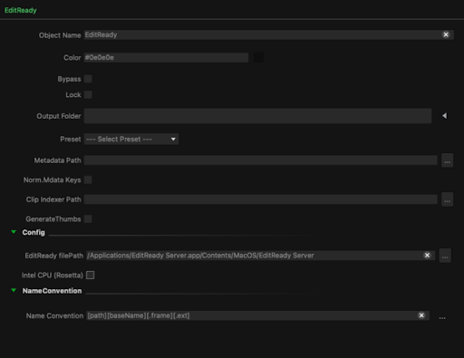
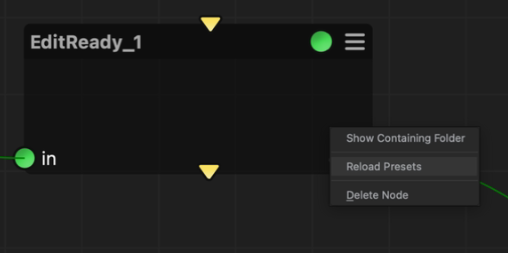
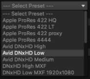
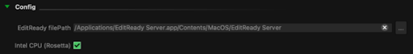
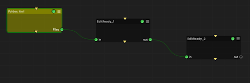

|
<< Click to Display Table of Contents >> EditReady |
This node integrates the Hedge Video EditReady Server application into Mistika Workflows so that transcoding jobs can be done by using its render engine.
At the moment of writing this document, Edit Ready is only available for MacOS platforms. For more information about Edit Ready please visit https://hedge.video/editready
The node requires to have Edit Ready Server installed in the same workstation where the workflow is going to be executed, and it will make use of the licensing state made through the same Edit Ready Server application. For more information about it please refer to its own documentation at: https://docs.hedge.video/editready-server
The properties of the node are the same available via CLI of the Edit Ready Server app:

in: Input files to be processed by Edit Ready Server app
out: Transcoded files created by the Edit Ready Server app.
Output folder: The destination file of the processed files.
Preset: Edit Ready transcode preset to be applied.
The list of available presets is retrieved from the default installation directory of Edit Ready, which is located at:
/Applications/EditReady Server.app/Contents/Resources/
Also custom presets made by the user in the Edit Ready app are retrieved. They are normally saved at:
/System/Volumes/Data/Users/your-user/Library/Application Support/EditReady/
The list of available presets can be updated by right-clicking on the EditReady node and selecting in the contextual menu ‘Reload Presets’:


Metadata Path: Path for metadata output.
Normalize Metadata Keys: toggle to use display names for metadata keys.
Clip Indexer Path: Path for clip indexing and span detection json output.
Generate Thumbs: toggle to create thumbnails from transcoded jobs.
In the Config properties, the path to the Edit Ready Server binary must be indicated. By default the node will look into the default Edit Ready Server installation path.
If the MacOS workstation is CPU Intel-based, the toggle ‘Intel CPU’ must be activated as well:

Once configured, the node can be used as any other node in Mistika Workflows. It will retrieve the input files, process them with the Edit Ready Server application, and place the processed files in its output connector to continue the workflow as desired.
Several EditReady nodes can also be concatenated in the same workflow, so the output transcode of the first one will be taken by the following EditReady node and processed with other settings (i.e., the first transcode goes from RAW to ProRes Proxy, then make h264 from them)
